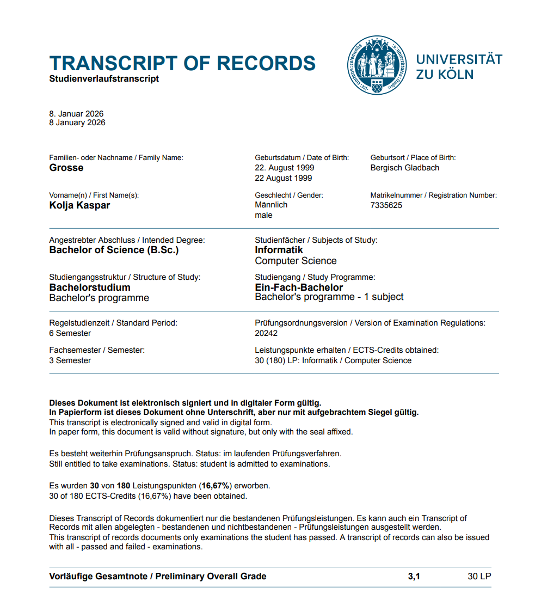
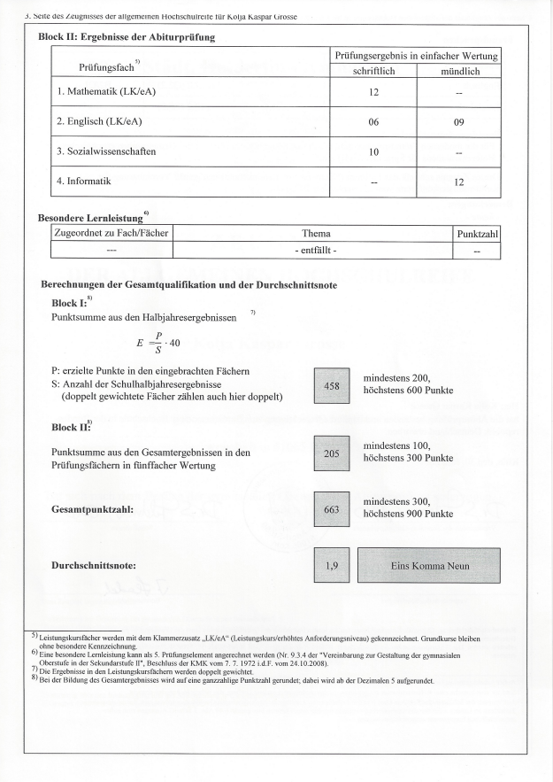

Kurzprofil
Mit einem abgeschlossenen Studium im Bereich Sportmanagement, Arbeitserfahrungen in verschiedenen Branchen wie der Luftfahrt und Formel 1 und ersten Eindrücken aus meinem angefangenen Informatikstudium, bringe ich ein breites Spektrum an Erfahrungen mit.
https://www.linkedin.com/in/kolja-grosse/
Berufserfahrung
Hier klicken für mehr Infos
➔
01/2025 - 12/2025 Stake F1 Team Kick Sauber Formel 1 Chauffeur für Audi Team Principal
Chauffeur-Einsatz bei 11 von 24 Formel-1-Rennen im Jahr 2025 über die Eventurline GmbH & Co. KG. Unter anderem Fahrdienst für den Team Principal des Sauber Teams.

05/2024 - 07/2024 EURO 2024 GmbH Airport & Train Station Supervisor

08/2023 - 03/2024 Eurowings Aviation GmbH Cost Control & Cost Reporting

10/2020 - 06/2021 e|motion sports GmbH ATP & WTA Turnier Operations
Schulische Ausbildung
10/2024 - heute Universität zu Köln Bachelor Informatik (vorläufig 3,1)
Bisher belegte Module: Java-Programmierung, Datenbanken, Datenvisualisierung, Mathematik und Logik sowie Softwaretechnik.
2022 State University of New York - Cortland Sportmanagement (GPA 3,10 ~ 2,0 in Deutschland)

10/2019 - 08/2024 Deutsche Sporthochschule Köln Bachelor Sportmanagement (2,5)

2017 Hölderlin Gymnasium Köln LKs Mathematik und Englisch (1,9)
Abiturzeugnis
Kenntnisse
Sprachen
Deutsch Muttersprache
Englisch verhandlungssicher
Französisch Grundlagen
IT-Kenntnisse
Java Programmierkenntnisse,
Microsoft Office, insbesondere Excel,
Adobe Suite, insbesondere Photoshop
Microsoft Office, insbesondere Excel,
Adobe Suite, insbesondere Photoshop
Persönliche Interessen
Luftfahrt, Logistik, Digitalisierung und Formel 1